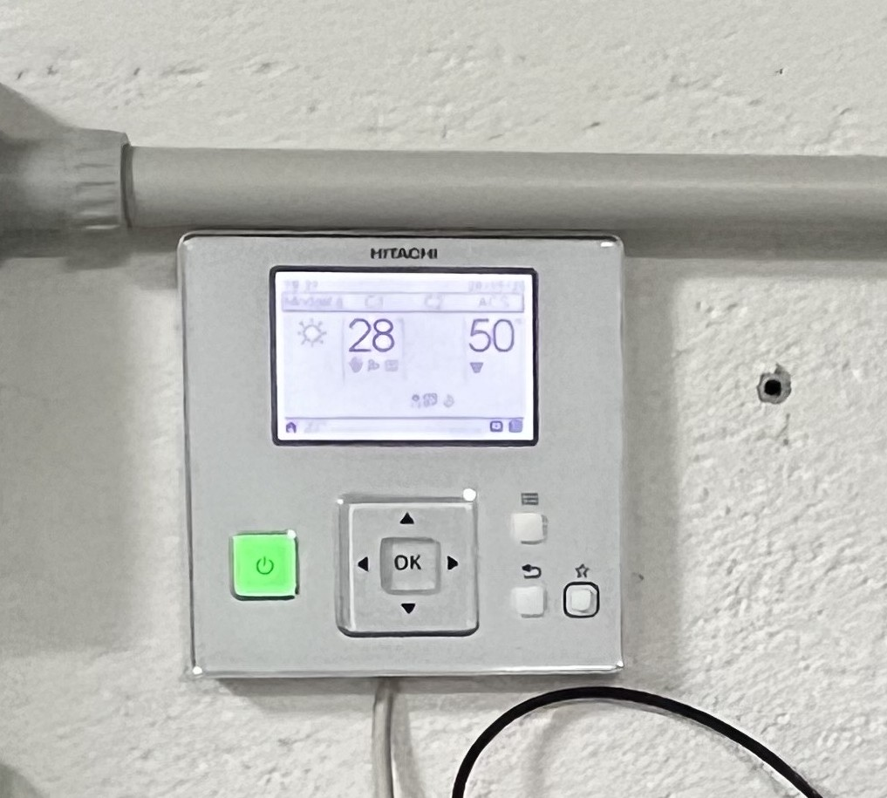

Il pannello con cui si imposta e si controlla la pompa di calore.

Impostazione critica: modalità Water (CentralMode = 2), altrimenti il segnale di R1 viene ignorato e la pompa non parte sotto comando di Home Assistant. Verifica: addr 1088 = 2.
Generatore di riserva a gas — attualmente fuori servizio.
Stato attuale: contatore gas sigillato, contratto disdetto per l'inverno 2025/2026. La caldaia non scalda. R7 la alimenta ~2 ore/settimana solo per l'antibloccaggio. L'unica fonte di calore è la pompa di calore.
Radiatori con ventola: rendono bene anche con acqua poco calda, ideali con la pompa di calore.
Scaldano più in fretta spingendo l'aria con una ventola. Permettono acqua di mandata più bassa, quindi COP più alto. Se la ventola non gira scaldano comunque, ma lentamente.
Trasforma le tante letture grezze in tre numeri puliti e affidabili.
Temperatura interna = media pesata delle sole zone con valvola aperta, aggiornata ogni 30 s. Temperatura esterna = tre sorgenti fuse con peso diverso. Gradi giorno = previsti per le 24 ore successive. Filosofia: ridondanza, più fonti per ogni misura.
Decide la temperatura dell'acqua, la più bassa possibile per il massimo rendimento.
T esterna
Mandata base
≤ 0°C
sale col freddo (es. −5°C → 39°C)
0÷4°C
~34°C fisso
> 4°C
scende (es. +7°C → 37°C)
Alla base si aggiunge una correzione PI (proporzionale-integrale). L'integrale non si azzera allo spegnimento: si azzera a mezzanotte o da dashboard. Richiede addr 1003 = 3 per essere recepito.
Lo stratega: pianifica i cicli delle 24 ore per spendere meno.
Dimensiona accensioni e pause sul fabbisogno giornaliero (gradi giorno). Un'app Python su AppDaemon ricalcola ogni ora la pausa ottimale, imparando dai cicli reali. Modalità manuale (calcola ma non applica) o AI (applica). Ogni sera produce un report dei consumi.
Riscaldamento: Tado apre → termostato chiede calore → guardie OK → R1 (24V al controller) → R2 (parte P1) → soft-start compressore → Reg.1090 = 6 → casa scalda → spegnimento e lockout.
Acqua sanitaria: sonda TWO sotto soglia → modalità ACS (Reg.1090 = 8) → la serpentina nella zona alta scalda l'acqua dei rubinetti → 20÷40 min, termosifoni fermi (normale).
Accumulo fotovoltaico: surplus solare → ramo Accumulo attiva la pompa anche senza richiesta comfort → puffer caricato con energia gratuita → calore ceduto nelle ore senza sole.